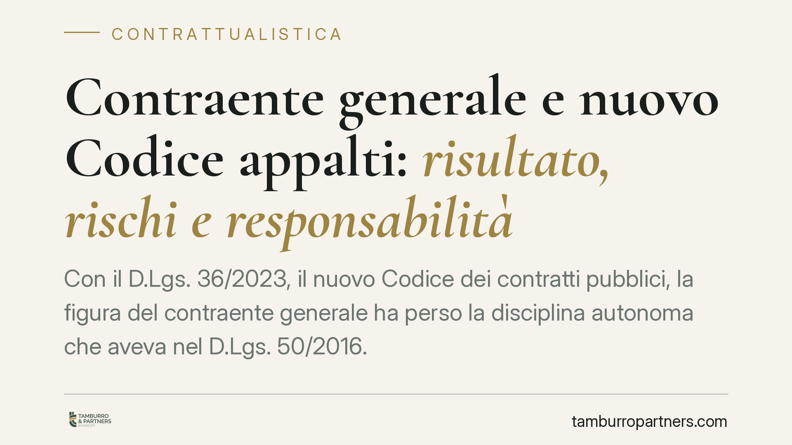

Contraente generale e nuovo Codice appalti: risultato, rischi e responsabilità
Con il D.Lgs. 36/2023, il nuovo Codice dei contratti pubblici, la figura del contraente generale ha perso la disciplina autonoma che aveva nel D.Lgs. 50/2016. Cambiano baricentro e rischi: dal formalismo procedurale al principio del risultato. Per le imprese significa rivedere clausole, allocazione dei rischi e responsabilità progettuale. Analizziamo cosa resta e cosa muta.

Il quadro: cosa è cambiato con il nuovo Codice
Il D.Lgs. 36/2023 ha sostituito il D.Lgs. 50/2016. È un dato che va detto con chiarezza, perché su questo passaggio ruota tutto il resto.
Nel vecchio Codice il contraente generale (*general contractor*) trovava una disciplina dedicata negli artt. 194-199 del D.Lgs. 50/2016: obblighi di prefinanziamento, redazione del progetto esecutivo, gestione unitaria dell'opera. Il nuovo Codice non riproduce quel corpo di norme come figura tipica e autonoma.
La conseguenza è concreta: chi ragiona ancora con lo schema "contraente generale ex artt. 194 ss." lavora su una cornice superata. Le operazioni complesse oggi si costruiscono prevalentemente sugli istituti generali del nuovo Codice - appalto integrato, concessione, partenariato - e sui principi che li governano.
Il principio del risultato e il principio di fiducia
Due norme sono il baricentro del D.Lgs. 36/2023.
L'art. 1 codifica il principio del risultato: l'affidamento e l'esecuzione del contratto sono finalizzati alla realizzazione dell'opera con la massima tempestività e il miglior rapporto tra qualità e prezzo. Non è un enunciato retorico: la norma lo qualifica come criterio prioritario nell'esercizio del potere discrezionale e come parametro per la valutazione della responsabilità del personale.
L'art. 2 introduce il principio di fiducia nell'azione legittima, trasparente e corretta delle amministrazioni e degli operatori. Anche qui c'è una ricaduta operativa: il principio orienta l'interpretazione delle clausole e la gestione della fase esecutiva, spostando l'attenzione dal rispetto formale della procedura all'effettivo raggiungimento dell'obiettivo.
Per l'impresa che assume una posizione affine a quella del vecchio contraente generale, questo significa che il metro di giudizio non è più solo "ho seguito la procedura", ma "ho contribuito al risultato".
Rischio di sviluppo progettuale
Resta centrale, ma va allocato con attenzione, il rischio di sviluppo progettuale: quando l'operatore redige o completa il progetto esecutivo, assume su di sé le conseguenze delle scelte tecniche e degli errori progettuali.
Negli affidamenti che includono la progettazione, l'operatore non può trasferire integralmente sull'ente concedente le sopravvenienze che derivano da un progetto da lui elaborato. È un punto su cui la prassi ANAC e la giurisprudenza amministrativa hanno insistito: l'assunzione del progetto comporta l'assunzione del relativo rischio economico, salvo diversa e specifica pattuizione.
Varianti e modifiche in corso d'opera
Le modifiche contrattuali sono ora disciplinate dall'art. 120 del D.Lgs. 36/2023, che ha razionalizzato le ipotesi di variante ammesse (circostanze impreviste e imprevedibili, modifiche non sostanziali, soglie di valore).
Per chi ha assunto il rischio progettuale il margine si restringe: non tutto ciò che emerge in cantiere è "imprevisto e imprevedibile". Se la sopravvenienza è riconducibile a un difetto del progetto elaborato dall'operatore, difficilmente potrà giustificare una variante a carico della stazione appaltante.
Deleghe espropriative e finanziamento
Sulla delega dei poteri espropriativi occorre prudenza. La possibilità di delegare all'operatore attività prodromiche all'esproprio comporta l'assunzione di responsabilità verso i terzi espropriati e obblighi procedimentali stringenti. Va disciplinata in modo puntuale nel contratto, definendo perimetro della delega e ripartizione delle responsabilità.
Sul fronte del finanziamento, gli oneri di anticipazione finanziaria - tipici delle grandi opere - vanno regolati con clausole chiare su tempi, garanzie e remunerazione del capitale immobilizzato.
Implicazioni pratiche per l'impresa
Chi opera su commesse pubbliche complesse deve smettere di replicare i modelli contrattuali costruiti sul D.Lgs. 50/2016. La standardizzazione delle clausole è oggi un rischio: schemi pensati per il contraente generale del vecchio Codice possono risultare incoerenti con il nuovo assetto e con l'allocazione dei rischi che ne deriva.
Cosa fare in concreto
- Verificate l'inquadramento: individuate l'istituto del D.Lgs. 36/2023 effettivamente applicabile alla commessa (appalto integrato, concessione, PPP) e abbandonate i riferimenti agli artt. 194-199 del vecchio Codice.
- Mappate il rischio progettuale: chiarite per iscritto chi risponde di errori e sopravvenienze del progetto esecutivo, senza clausole ambigue.
- Regolate le varianti alla luce dell'art. 120: definite in contratto cosa qualifica una sopravvenienza come imprevedibile e distinguetela dal difetto progettuale.
- Disciplinate con precisione la delega espropriativa: perimetro, responsabilità verso terzi e obblighi procedimentali.
- Rivedete i modelli standard: fate valutare le clausole di allocazione dei rischi e di finanziamento su ogni singola operazione, evitando format ripetuti.
---
Contributo informativo a cura di Tamburro & Partners - Avv. Giuseppe Tamburro. Non costituisce parere legale.
Ogni contratto ha il suo equilibrio.
Se vuoi una revisione delle clausole o una redazione su misura, scrivi allo studio. Ti rispondiamo entro un giorno lavorativo.